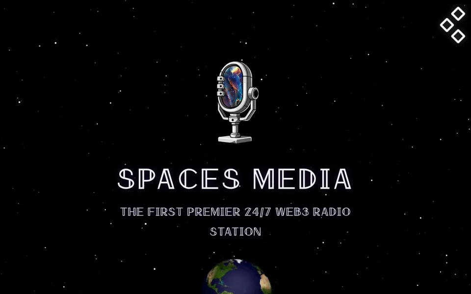
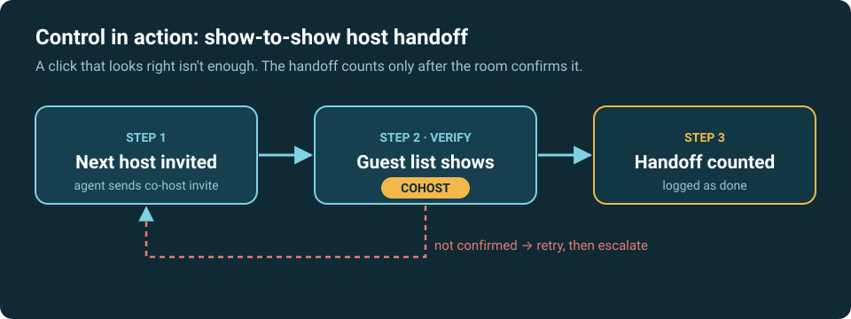

Spaces Media: 24/7 X Spaces radio automation Founder
24/7on air
40+shows/week
1000shours on air
~5.4kX followers
An AI operations agent keeps a 24/7 Web3 radio station live on X Spaces and hands each show to the next host on time.
How it works
- Problem
- A Web3 radio station on X Spaces that runs around the clock with 40+ shows a week. Live Spaces drop, clients crash, and every show has to be handed to the next host on time. Doing that by hand day and night isn't sustainable.
- What I built
- An AI operations agent ("Orion", built on Hermes Agent) that manages the live Space on a Windows desktop, with Discord as its control and alert channel.
- Keep-alive: it detects a lost broadcast, goes live again after 1 minute down, and retries every 2 minutes.
- Crash recovery, plus show-to-show host handoffs.
- Schedule management: a daily 6 a.m. schedule post, public warnings and host DMs 30 and 5 minutes before each show, and a title change for each show.
- The Spaces Media website, built with AI coding agents.
- Controls
- A handoff counts as done only when the next host is confirmed as co-host in the room. A click that looks right isn't enough.
- Routine health checks run as plain scripts with no AI model cost.
- Dangerous commands need my approval, and credentials stay in a vault the agent can't read.
- Every incident becomes a written procedure.
- Handoff rule

- Results
- The station broadcasts 24/7, runs 40+ shows a week, has thousands of hours on air, and has about 5.4k followers on X.